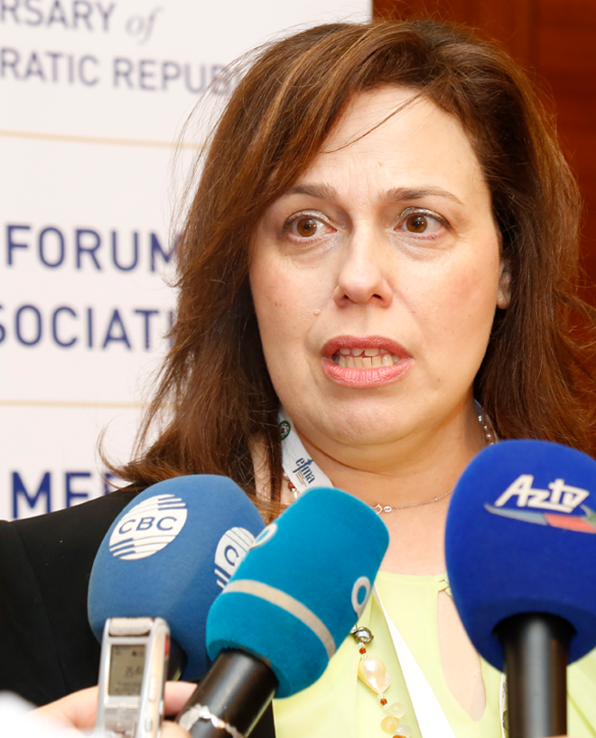

News & Update

European Forum of Medical Associations on Visit to Montenegro
15 July 2019 - Prime Minister of Montenegro Duško Marković hosted the delegation of the European Forum of Medical Associations, who are staying in Montenegro in order to prepare the 34th Annual Meeting of the Forum scheduled to take place in Podgorica in late August.
Read MoreEuropean Forum of Medical Associations on Visit to Montenegro
15 July 2019 - Prime Minister of Montenegro Duško Marković hosted the delegation of the European Forum of Medical Associations, who are staying in Montenegro in order to prepare the 34th Annual Meeting of the Forum scheduled to take place in Podgorica in late August.
Read More